Construcción de piscinas
Excavación, ferralla, gunitado, impermeabilización y revestimiento.
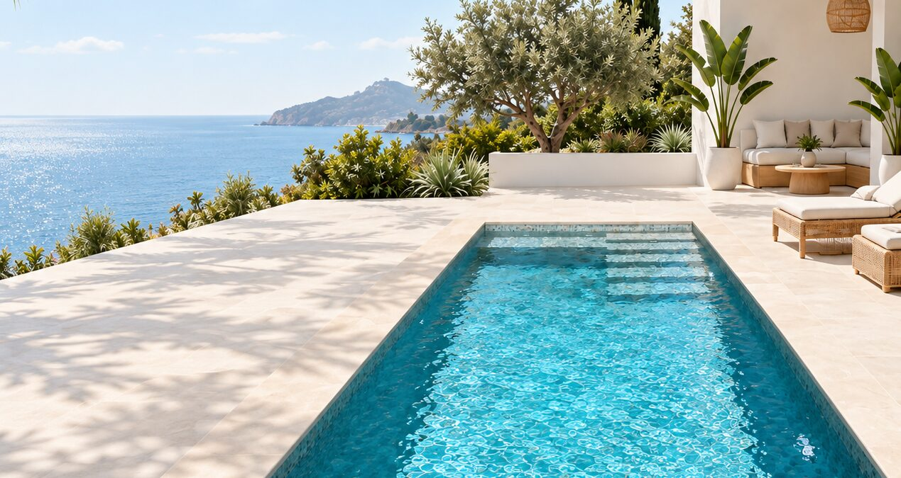
Construcción, reparación y renovación de piscinas en Alicante y Valencia.
Te acompañamos en cada etapa del proyecto, desde la idea inicial hasta el mantenimiento, con soluciones a medida y la máxima calidad.
Excavación, ferralla, gunitado, impermeabilización y revestimiento.
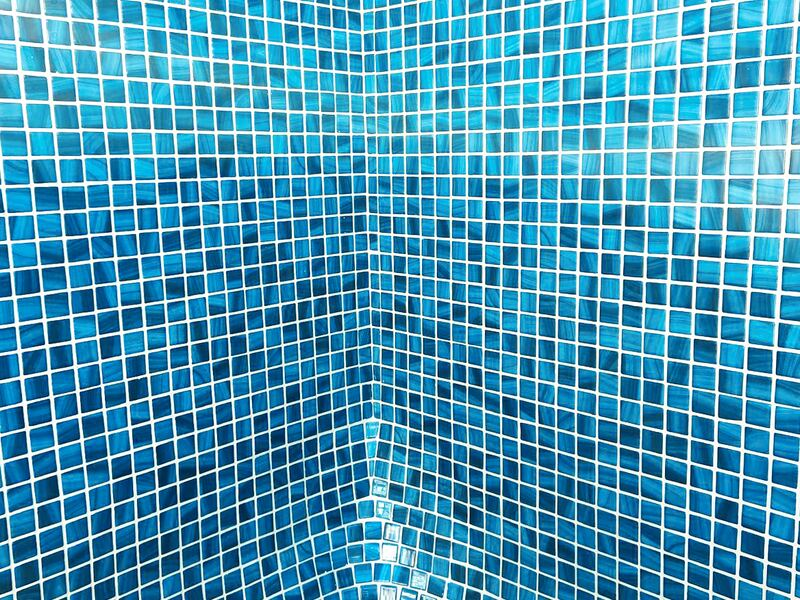
Reparación de fugas, impermeabilización y renovación de revestimientos.
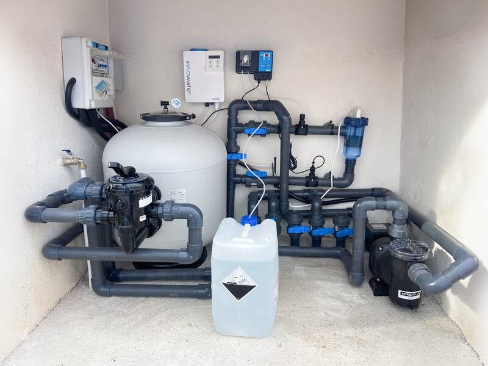
Filtros y bombas, cloración salina y control de pH.
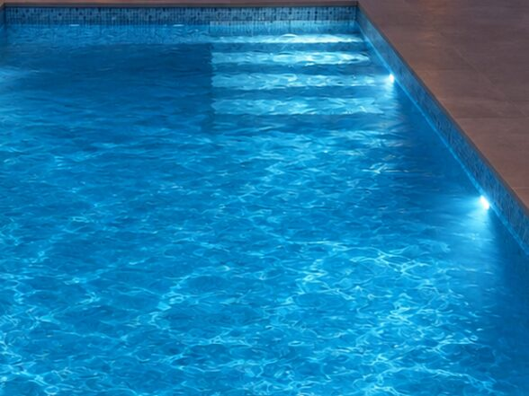
Bombas de calor, cuadros eléctricos e iluminación de piscinas.
Cada piscina cuenta una historia. Descubre algunos de nuestros proyectos y déjate inspirar.
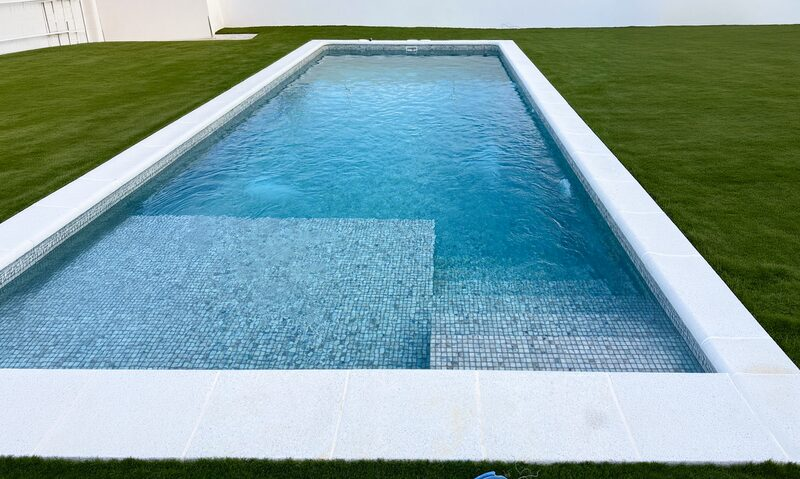
Piscina con banco interior
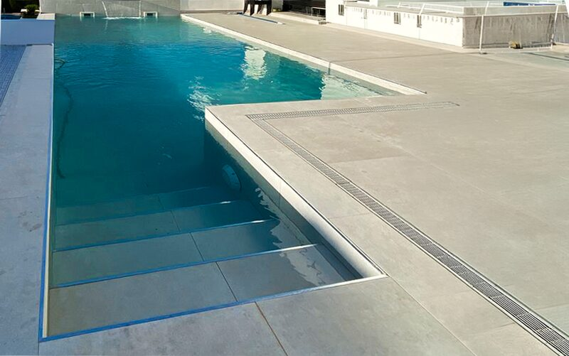
Escalera de obra y rejilla perimetral
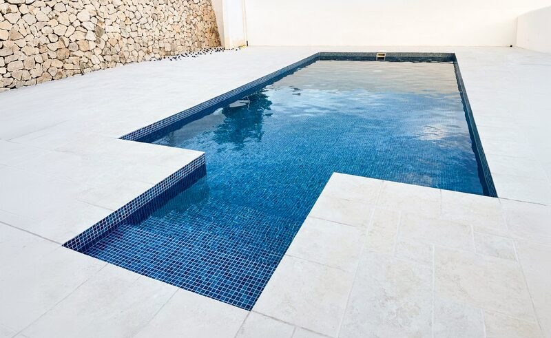
Gresite azul y muro de piedra
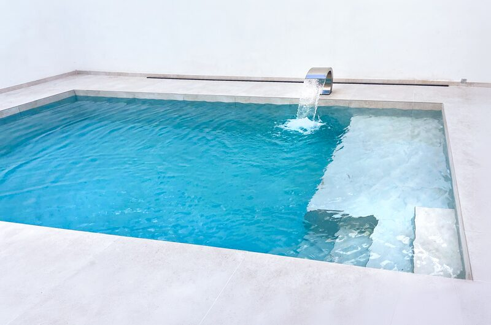
Cascada de acero inoxidable
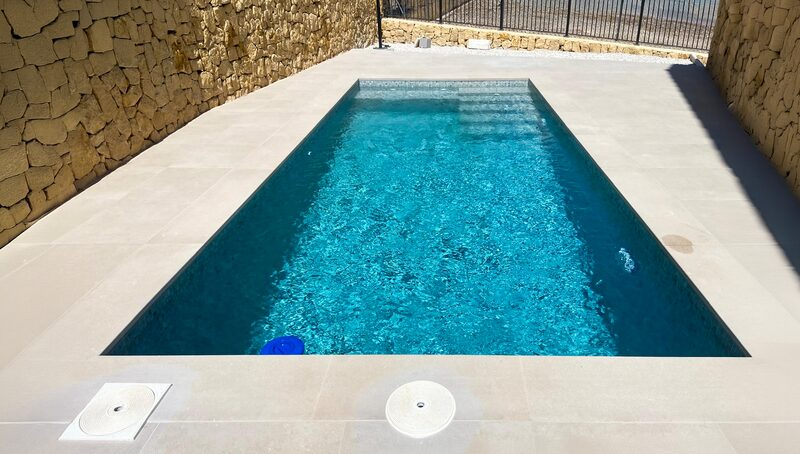
Piscina entre muros de piedra
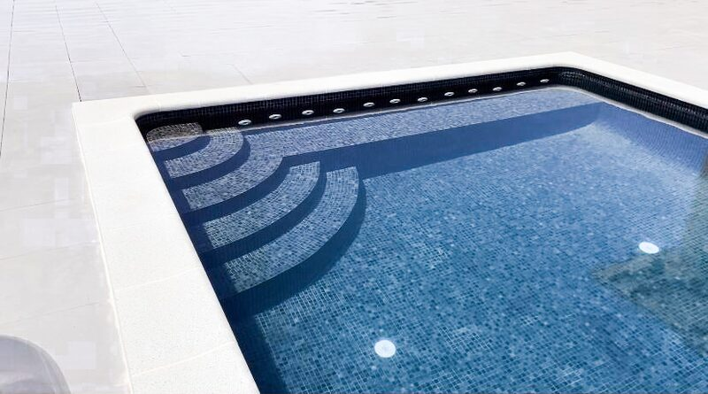
Escalera curva con focos LED
De la consulta a la entrega,
en 4 pasos
Primer contacto por teléfono o WhatsApp para entender qué necesitas.
Visitamos el terreno, medimos y estudiamos
el proyecto in situ.
Presupuesto detallado y sin compromiso, sin letra pequeña.
Obra, seguimiento continuo y entrega llave en mano.
En Piscinas Yuriy nos encargamos de todo el proceso con un equipo propio.

Piscinas Yuriy, S.L., con equipo propio.
Excavación, gunitado, revestimiento, fontanería y sala de bombas.
Filtración, cloración salina, control de pH, bombas de calor y cuadros eléctricos.
Instalación técnica adaptada a cada proyecto.
Sin compromiso.
Resolvemos las dudas más habituales para que tomes tus decisiones con total confianza.
Depende del tamaño, el terreno y los materiales elegidos. Pide un presupuesto personalizado sin compromiso.
Piscina de obra en hormigón gunitado, gresite o porcelánico, cloración salina y bombas de calor.
Entre 8 y 12 semanas según tamaño y permisos. Plazo exacto según el proyecto.
No estudiar el terreno, elegir mal los materiales o saltarse los permisos municipales.
Trabajamos en toda la Comunidad Valenciana: Valencia, Gandia, Oliva, Pego, Dénia, Ondara, Xàbia, Benissa, Calpe, Altea, Benidorm y Alicante.
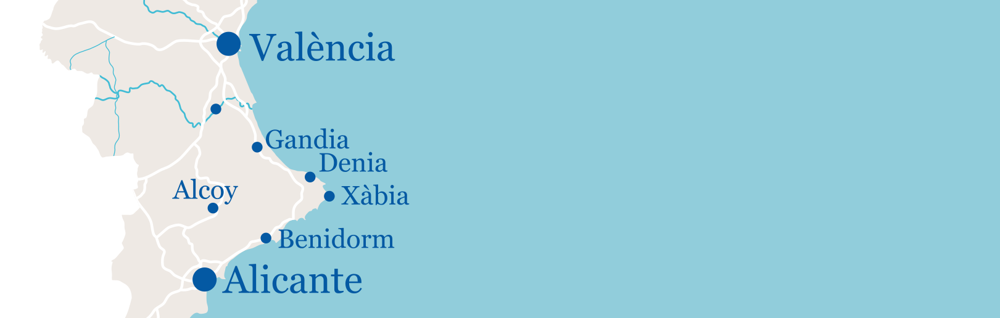
Escríbenos por WhatsApp,
llámanos al +34 678 948 509 o rellena
el formulario y te responderemos en breve.